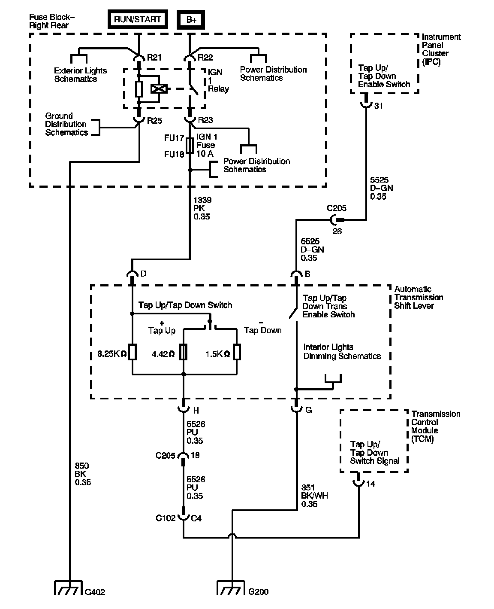

Tap Shift Circuit Performance
TAP Shift Circuit Performance
TAP Shift Circuit Performance:

Circuit Description
The TAP Shift system allows the driver to manually shift gears by using the TAP Shift switches located on the automatic transmission shift lever. Pushing the shifter handle forward will command an upshift and pulling the shifter handle back will command a downshift. The TAP Shift system is activated when the gear selector is in the manual (M) position and is deactivated in all other positions.